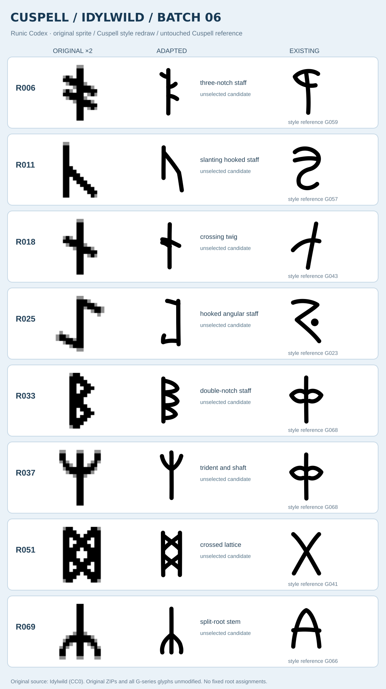
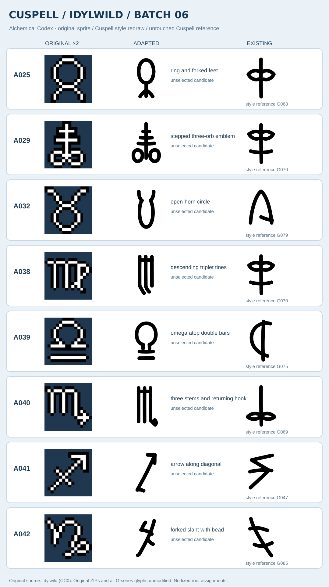

Left: actual Idylwild 16px original. Middle: editable Cuspell-style derivative. Right: existing Cuspell glyph for visual consistency only, not a replacement decision. No semantics or canonical glyphs changed.
Runic

Alchemical

Idylwild source art CC0. Original archives preserved, candidate status unreviewed.